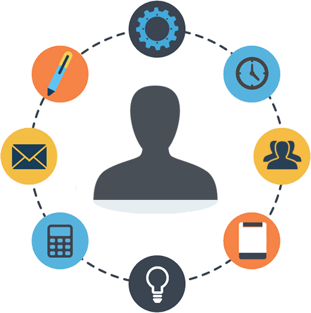

About Me
Hi! My name is Marcos, and if you are here it's probably because you have seen my github profile or CV. I am a 25 years old and have been looking for a job as web developer for a while. This portfolio is just one more project in which i have invested some time to improve my visibility on the web and working networks.
 Marcos García García
Web Developer
Marcos García García
Web Developer
Projects
BloomJS
BloomJS was the final project that i did present to pass the Web Applications Development Advanced Specific Vocational Training that is taught at I.E.S. Bernaldo de Quirós, Mieres. BloomJS was first thought as a simple framework to generate graphic components that the user could copy and paste on the page he wanted. However, the most part of the project was written with just plain Javascript, which made the development tedious and slow, from the lack of syncronization between a real DOM and a virtual one. Furthermore, the project was developed during the practice period, while we were doing Wordpress tasks and other stuff at a startup, so i had not enough time to refine the project to the point i wanted, not even to a decent 60%
I estimate that it would take some months to take this project to the phase i initially figured out, so it was left behind because of the raising importance of other projects for my portfolio, for example
I don't discard working on it again in the future, at least when i end up with some completed projects in this portfolio.
 Github
Github
Newspaper
Newspaper is a project in which i tried to mimetize newspapers format and design in a web application in which every user can become an article writer and share its stuff with other readers. This page was a project to practice Laravel + VueJS, since i needed to acquire more knowledge on those frameworks.
Although this project is not yet completed, im still working on it and trying to learn more Laravel and VueJS features. I think this project will become a good example of what im capable of when i complete it
Github
Game
As i said previously, i live in a rural environment. Living near nature is beautiful and calm, but it can be boring if you don't spend your time on some activity. At a young age i discovered videogames with a PS1, and have been playing in my free time ever since. Furthermore, with the years passing by, internet service providers deployed fast connection all over the place, so the people in the town started to be able to contact with their friends and family whenever they wanted.
My videogame experiences always make me think about developing a simple but entertaining 2D game and triggers my creativity and expectations. I have already thought about its graphics, mechanics, modes, online interactions and even its website, but this is, with no doubt a very long term project.
The project has already been started, and some things that i have worked on are: movement, UI, 2D graphics, gravity, world generation, shading, lightning, weather...
As i said, this project is not even near of being completed, but if you are interested you can visit
the repository at Github
I usually spend some of my free time thinking about this projects or thinking about new ideas. I will be pushing new changes
until they are finished on their respective Github repository. For more information about the code you can visit my Github account:
marcosggdev
Contact
Contact